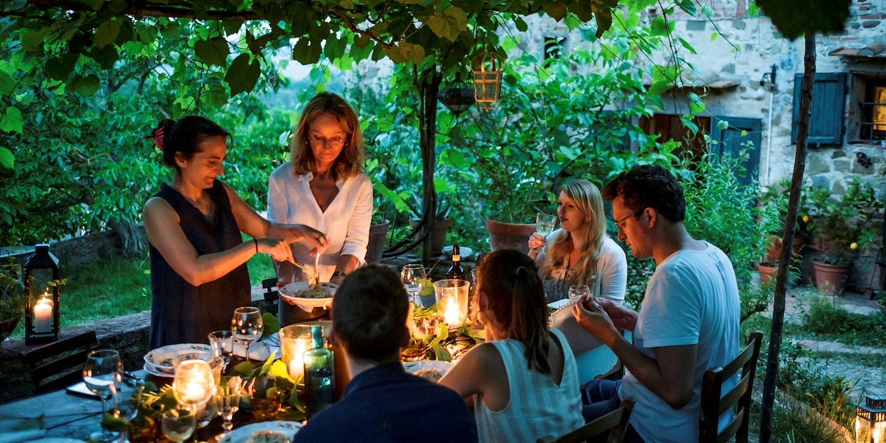
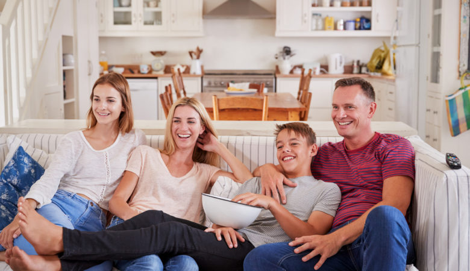

Accueil › Les livres › Chronique
Chronique · douze mois en famille
Une année en famille, racontée par chacun
Les premiers mots du petit, la rentrée du grand, le déménagement, les dimanches chez les grands-parents. Pendant douze mois, chacun raconte à voix haute ce qu'il a vécu. À la fin, le livre de votre année, et toutes vos voix à réécouter.
- Satisfait ou remboursé 30 jours
- Livraison offerte en Europe
- Leur voix, pour toujours
Pour qui, pour quand
L'année qu'on aura oubliée dans dix ans
Les grandes années, on s'en souvient. Ce qui s'efface, ce sont les petites choses : la phrase que disait la petite à quatre ans, le surnom du chat, ce qu'on mangeait le vendredi soir. Ce livre les garde.

Une année de changementsUne naissance, un déménagement, un nouveau travail, une année à l'étranger. Celle dont on voudra se souvenir de chaque détail.

Une année ordinaireLes petits-déjeuners pressés, les vacances, les disputes pour la télécommande. C'est souvent elle qu'on regrette le plus, plus tard.
Une année de la vie de leurs enfants et petits-enfants, racontée par chacun d'eux. Un cadeau à ouvrir à Noël suivant.
Ce qu'on y raconte
Douze mois, vus par chacun
Le quotidien d'une famille sur une année, par plusieurs voix. Les plus jeunes racontent leurs premières fois, les plus grands ce qui a changé. Et c'est souvent en écoutant les autres qu'on découvre ce qu'ils ont vécu.
Thèmes donnés à titre indicatif. [Chapitres de Chronique à confirmer]
Le ton des questions
Des questions pour tous les âges
Jamais de oui ou non : chaque question fait naître une scène. Et les suivantes rebondissent sur ce qui vient d'être raconté, comme le ferait un journaliste qui suivrait votre famille toute une année.
Exemples de questions pour donner le ton : la banque de questions Chronique est en cours d'écriture.- Le quotidienRacontez le petit-déjeuner de ce matin, du réveil jusqu'à la porte.
- Les premières foisQu'avez-vous fait pour la première fois ce mois-ci ?
- Les mots d'enfantsUne phrase d'un enfant de la maison qui vous a fait rire cette semaine ?
- Les fêtesQui était autour de la table pour le dernier repas de fête, et qui était assis où ?
- Les vacancesLe meilleur moment des vacances, et celui qu'on préfère oublier ?
- Les lieuxDécrivez votre coin préféré dans la maison, en ce moment.
- Les saisonsQu'est-ce qui vous dit que l'été est vraiment arrivé chez vous ?
- Ce qui a changéQu'est-ce qui est différent dans la famille par rapport à l'année dernière ?
Dans l'app
Une carte, un mois, toutes vos voix
La même app que nos livres de vie : une carte à la fois, le texte en grand, on la touche pour parler. Assez simple pour les grands-parents, assez rapide pour les ados.
Écrans de l'app reproduits pour la page : le parcours à plusieurs voix est en cours de conception. [À remplacer par de vraies captures]
Ce qu'on entend
Les petites choses qu'on aurait oubliées
Un an plus tard, on réécoute, et on ne se souvenait plus de rien : ni de cette voix-là, ni de cette phrase, ni de ce fou rire un mardi soir.
Exemples rédigés par nous pour montrer le principe : jamais publiés. Ils seront remplacés par de vrais extraits, avec l'accord de ceux qui racontent.Les premières fois · « Qu'avez-vous fait pour la première fois ? »
« J'ai fait du vélo toute seule et papa il courait derrière et après il courait plus et moi je pédalais encore. Et après je suis tombée dans les fleurs de la voisine. »
Ce qui a changé · « Qu'est-ce qui est différent cette année ? »
« Le déménagement. Les cartons sont restés dans le couloir jusqu'en novembre. Un soir, on a mangé des pâtes assis par terre, sur un carton marqué "cuisine", et c'est un de mes meilleurs dîners de l'année. »
Les fêtes · « Qui était autour de la table ? »
« Pour Noël, on était quatorze, et il manquait deux chaises. Les enfants ont mangé sur la malle du grenier. Mon petit-fils a fait un discours pour le chien. Je l'ai enregistré dans ma tête, celui-là. »
À quoi ressemblera le livre
Votre année, à plusieurs voix
Les souvenirs de chacun sont remis dans l'ordre des mois, de janvier à décembre. On garde les mots de chacun, ceux des enfants compris. Rien n'est inventé ni romancé.
Sans les petites roues
Papa : On avait enlevé les petites roues un samedi matin, sur le parking de l'école. Je tenais la selle. Au troisième tour, j'ai lâché sans rien dire.
Elle, 6 ans : Je savais pas qu'il avait lâché. Après je l'ai vu loin derrière et j'ai crié « regarde ! » et je suis tombée.
« Je savais pas qu'il avait lâché. »
Maman : Je n'étais pas là, j'étais au marché. Quand je suis rentrée, elle avait un pansement sur chaque genou et elle m'a dit, très sérieuse, qu'elle savait conduire maintenant.
Exemple de mise en page, texte d'illustration. [La façon de faire dialoguer plusieurs voix dans le livre est à confirmer] [Extrait réel à venir : Diane fournira un enregistrement]
Comment ça se passera
De janvier à décembre, un livre relié
- Le débutVous créez le livre
Vous choisissez Chronique. Tout le paramétrage se fait ensuite dans l'app.
- Les premiers joursVous réunissez la famille
Jusqu'à 6 voix, petits et grands. [Mode d'invitation et participation des enfants à confirmer]
- Pendant 12 moisChacun raconte
Une carte à la fois, au fil des semaines. Les questions suivent les saisons et rebondissent sur ce que chacun a raconté.
- À la fin de l'annéeLe livre
Toutes les voix sont réunies, mois par mois, dans un livre relié, avec les QR codes pour les réécouter.
Fiche technique
Ce qui est compris
Un seul prix pour toute la famille, sans abonnement.
- Prix
- 149 €, livraison offerte en Europe. -10 % dès 2 histoires.
- Qui raconte
- Jusqu'à 6 personnes de la famille, depuis l'app (iPhone ou Android)
- Durée
- 12 mois pour raconter
- Livraison
- Environ 3 semaines une fois le livre validé, offerte en Europe
- Réponses
- À voix haute, jusqu'à 20 minutes par réponse
- Le livre
- Relié, jusqu'à 100 pages
- Format
- 210 × 210 mm, carré [finitions à confirmer avec l'imprimeur]
- Photos
- [Nombre de photos imprimées à confirmer]
- Les voix
- Un QR code pour chaque histoire, enregistrements conservés à vie
- Rappels
- [Rythme des rappels à confirmer]
- Après l'achat
- La carte cadeau à imprimer tout de suite, et l'app pour préparer l'histoire
- Garantie
- Satisfait ou remboursé 30 jours
- Avant l'impression
- Vous relisez tout le livre et vous validez. Rien ne part à l'impression sans votre accord.
Ce qu'on aimerait vous entendre dire
Le livre qu'on ouvre chaque Noël
Exemples de mise en page, rédigés par nous : jamais publiés. La section reste masquée sur le site officiel jusqu'aux vrais témoignages.L'année du déménagement
« On a réécouté le mois de janvier en décembre. On ne se souvenait plus du tout de l'ancien appartement. »
Les mots d'enfants
« Notre fils avait trois ans. Entendre sa petite voix dans le livre, c'est ce qui nous a le plus touchés. »
Pour les grands-parents
« Nos parents vivent loin. Ils ont reçu le livre à Noël, et ils ont eu l'impression d'avoir passé l'année avec nous. »
Ce que j'ai raconté
« Mon ado ne me raconte rien. Dans l'app, il a parlé dix minutes de son match de rugby. »
Combien de personnes peuvent raconter ?
Jusqu'à 6 voix pour un même livre : les parents, les enfants, les grands-parents, ou toute autre personne de la famille.
Les enfants peuvent-ils participer ?
Oui, petits et grands racontent. [Âge minimum et fonctionnement pour les plus jeunes, par exemple sur le téléphone d'un parent, à confirmer]
Faut-il commencer en janvier ?
[À confirmer : l'année commence-t-elle à la date d'activation ?]
Chacun entend-il ce que racontent les autres ?
[À confirmer : confidentialité des réponses entre membres de la famille]
Le livre sera-t-il fidèle à ce qui a été dit ?
Oui. On garde les mots et les expressions de chacun, on remet les souvenirs dans l'ordre des mois et on enlève les répétitions. Rien n'est inventé.
Peut-on relire le livre avant l'impression ?
Oui, et c'est même indispensable : vous relisez tout le livre et vous le validez. Rien ne part à l'impression sans votre accord. À la fin de la durée prévue, nous vous le rappelons par email, et par une notification dans l'app, jusqu'à votre validation.